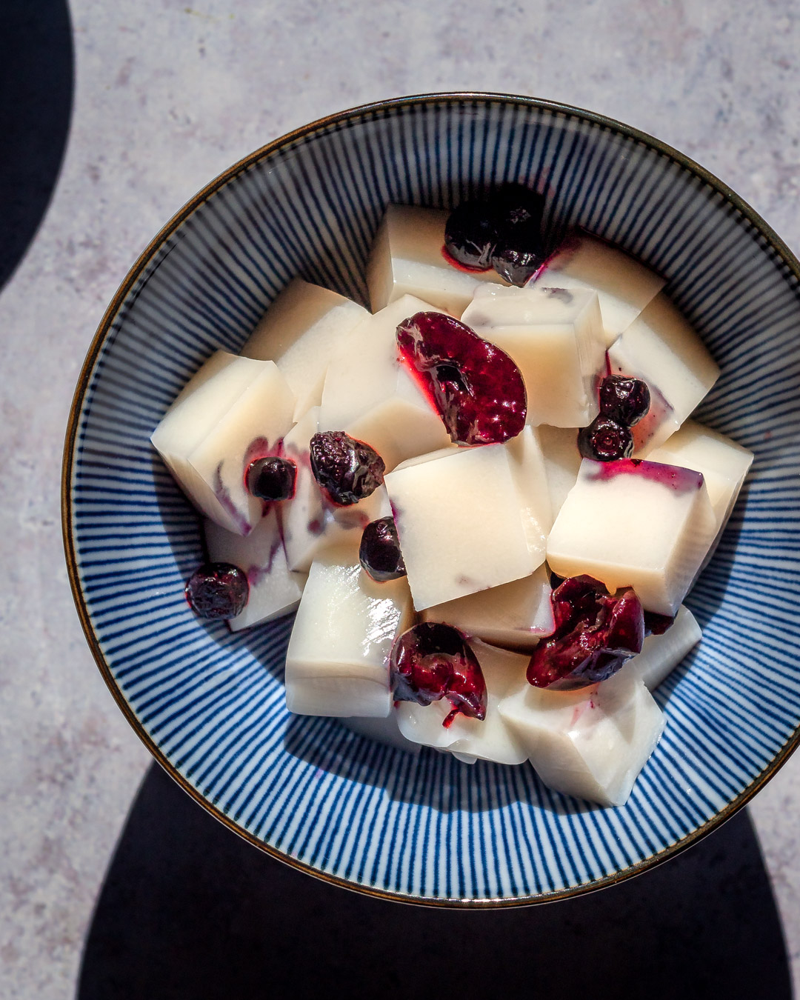

Today we're going to learn how to make Almond Tofu!, a traditional chinese summer desert that will refresh you in seconds!
I personally love this desert because it was introduced to me by my favourite game, and my favourite character. Also, it was summer a few weeks ago so it was the perfect time to eat a delicious desert like so.

Lastly, I, Forest, fully acknowledge that all homepage files must be renamed to index.html. I have tested this website on "https://tinyurl.com/cst10sites" and will also do so with upcoming assignments. My code has been checked on "https://validator.w3.org/" and has been corrected. Failure to do so will result in severe loss of marks.